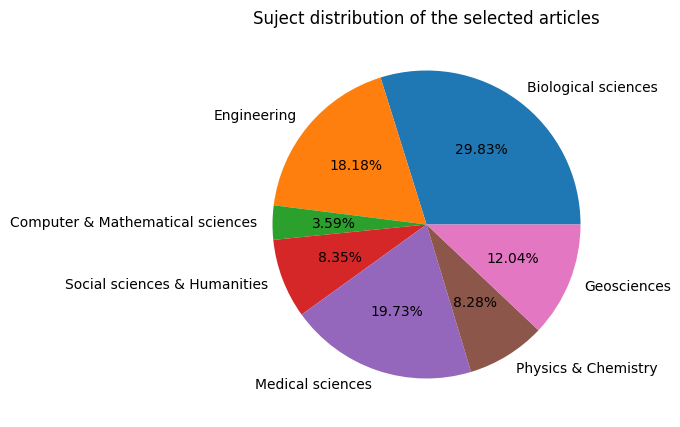
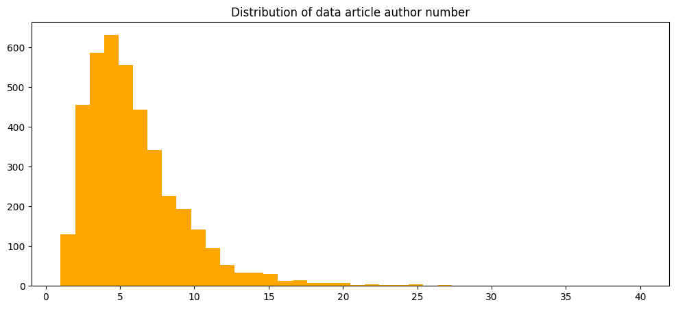
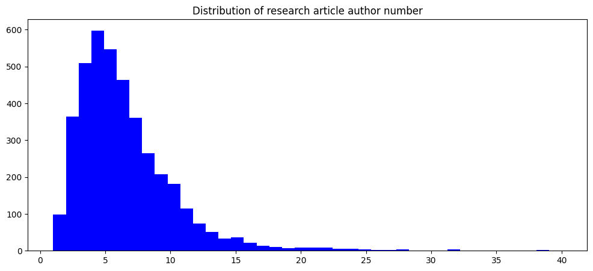
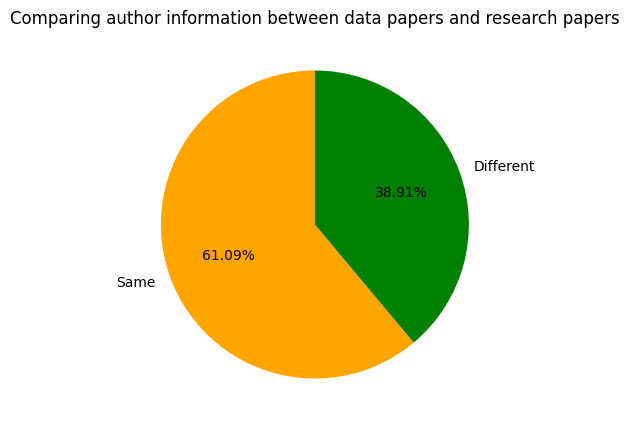
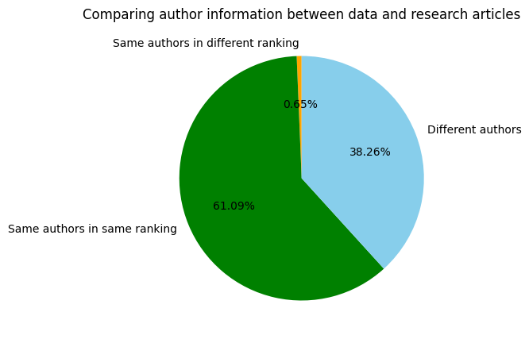
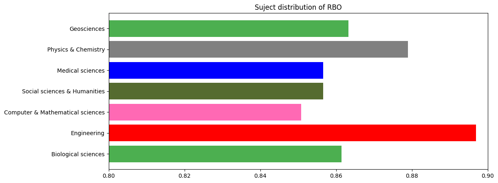
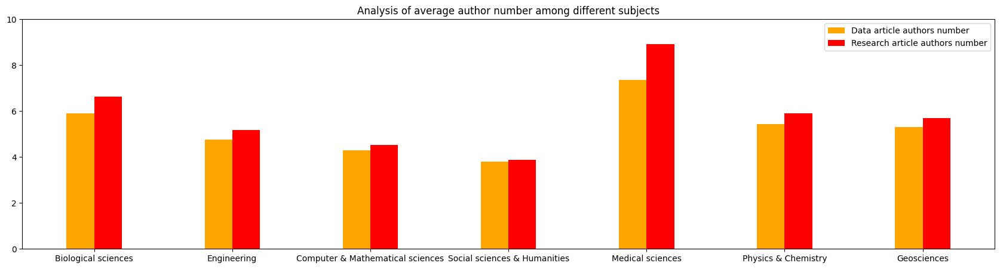

---
title: "Tianji's Submission"
description: "First submission for the final assignment"
author: "Tianji Jiang"
date: "03/12/2023"
date-modified: "03/12/2023"
---This is the final project of Tianji Jiang.
- Project description:
“Data sharing” generally refers to the act of releasing data in a form that can be used by other individuals. Promoting data sharing has been the consensus of our academic community today, as it allows people to benefit from current researches in a new approach. Data sharing has been credited with increasing efficiencies in research, more reproducible science, maximizing the use of a valuable resource, allowing for an expansion of innovation, escalating collaboration, and has been credited with the rapid development of COVID-19 vaccines, therapies and diagnostics.
It will be interesting to explore how researchers share their data in practice. In this project, I am going to take a small step towards big question by exploring how data sharing work is distributed within a research team. I retrieved 4025 data papers from Data in Brief, a multidisciplinary and peer-reviewed journal which publishes data papers and provides access to research data. I also retrieved 4025 research articles where the research data are created. Each data paper refers to a research article. Considering that the contributors’ names listed as authors and the sequence of authors usually reflect contributions to the work accessed by the research group (Traditionally, the first author contributes most, whereas the position of subsequent authors is usually decided by contribution), I compare the authors of each data paper and the relevant research paper to answer my research question.
The data were web-sracpped through the Socopus API, which provided bibliography information of articles in Data in Brief. If the dataset described in a data article was generated specifically for a research study, the journal will link the data article to the corresponding research article. In this study, I limited my analysis to those data articles that were linked to a corresponding research article. I extracted 4025 data articles published by Data in Brief from December 2014 to December 2022 and the 4025 corresponding research articles, focusing on author information.
- Data description
import pandas as pd
import matplotlib.pyplot as plot
input_data = pd.read_csv("data/author_information.csv")
input_data.sample()
"""
Dauthors: The list of the authors of a data article;
Rauthors: The list of the authors of a research article;
Dnumber: The number of the authors of a data article;
Rnumber: The number of the authors of a researcg article;
Subjects: The subject that the article is studying
RBO, Jaccard, LevenshteinDistance & LevenshteinRatio: indexes to campare the authors of a data article abd those of a research article
"""| Data Paper | Research Paper | Dauthors | Rauthors | Dnumber | Rnumber | Discipline | Subjects | RBO | Jaccard | LevenshteinDistance | LevenshteinRatio | |
|---|---|---|---|---|---|---|---|---|---|---|---|---|
| 815 | 10.1016/j.dib.2020.106409 | S0004370219301110 | ['Benzmüller, Christoph', 'Farjami, Ali', 'Fue... | ['Benzmüller, Christoph', 'Parent, Xavier', 'V... | 8 | 3 | Computer Science | Computer & Mathematical sciences | 0.707577 | 0.625 | 5 | 0.545455 |
input_data.describe()| Dnumber | Rnumber | RBO | Jaccard | LevenshteinDistance | LevenshteinRatio | |
|---|---|---|---|---|---|---|
| count | 4025.000000 | 4025.000000 | 4025.000000 | 4025.000000 | 4025.000000 | 4025.000000 |
| mean | 5.644224 | 6.345093 | 0.868038 | 0.056287 | 1.875031 | 0.802041 |
| std | 3.639868 | 5.381833 | 0.254824 | 0.153139 | 4.553802 | 0.285710 |
| min | 1.000000 | 1.000000 | 0.000000 | -0.111111 | 0.000000 | 0.000000 |
| 25% | 3.000000 | 4.000000 | 0.873016 | 0.000000 | 0.000000 | 0.666667 |
| 50% | 5.000000 | 5.000000 | 1.000000 | 0.000000 | 0.000000 | 1.000000 |
| 75% | 7.000000 | 8.000000 | 1.000000 | 0.000000 | 2.000000 | 1.000000 |
| max | 43.000000 | 81.000000 | 1.000000 | 1.000000 | 75.000000 | 1.000000 |
#visualization 1
subject_list = {}
for i in range(0, 4025):
if input_data.iloc[i,7] in subject_list.keys():
subject_list[input_data.iloc[i,7]] = subject_list[input_data.iloc[i,7]] + 1
else:
subject_list[input_data.iloc[i,7]] = 1
frequentwords = list(subject_list.keys())[:7]
frequentvals = list(subject_list.values())[:7]
plot.figure(figsize=(12,5))
plot.pie(frequentvals, labels = frequentwords, autopct='%.2f%%')
plot.title("Suject distribution of the selected articles")Text(0.5, 1.0, 'Suject distribution of the selected articles')
#Visualization 2
thedata = []
for i in range(0, 4025):
thedata.append(input_data.iloc[i,4])
plot.figure(figsize = (12,5))
plot.hist(thedata, histtype = "bar", bins = 40, color = "orange", range = (1,40))
plot.title("Distribution of data article author number")
plot.show()
#Visualization 3
thedata = []
for i in range(0, 4025):
thedata.append(input_data.iloc[i,5])
plot.figure(figsize = (12,5))
plot.hist(thedata, histtype = "bar", bins = 40, color = "blue", range = (1,40))
plot.title("Distribution of research article author number")
plot.show()
#Visualization 4
count_ldistance = 0
for i in range(0, 4025):
if input_data.iloc[i,8] == 1:
count_ldistance += 1
remain = 4025 - count_ldistance
plot.figure(figsize = (12,5))
thelabels = ['Same','Different']
plot.pie([count_ldistance, remain], labels = thelabels, autopct='%.2f%%', startangle = 90, colors = ["orange","green"])
plot.title("Comparing author information between data papers and research papers")
plot.show()
print(count_ldistance, remain)
2459 1566- Data analysis directly relevant to my question of interest
#Visualization 1
count_a = 0
count_b = 0
count_c = 0
tcount = 0
for i in range(0,4025):
m = input_data.iloc[i,4]
n = input_data.iloc[i,5]
if input_data.iloc[i,8] != 1:
tcount += 1
if m > n:
count_a += 1
elif m < n:
count_b += 1
elif m == n:
count_c += 1
print(count_a,count_b, count_c, tcount)
m = [count_a,count_b, count_c]
plot.figure(figsize = (12,5))
thelabels = ['Data article has more authors', 'Research article has more authors', 'Have the same number of authors']
plot.pie(m, labels = thelabels, autopct='%.2f%%', startangle = 90, colors = ["orange","lightgreen","skyblue"])
plot.title("Comparing author numbers in articles of different authors")
plot.show()239 739 588 1566
#Visualization 2
count_jaccard_the_same = 0
different = 0
for i in range(0, 4025):
if input_data.iloc[i,8] != 1 and input_data.iloc[i,9] == 1:
count_jaccard_the_same += 1
elif input_data.iloc[i,8] != 1 and input_data.iloc[i,9] != 1:
different += 1
plot.figure(figsize = (12,5))
thelabels = ['Same authors in different ranking','Same authors in same ranking', 'Different authors']
plot.pie([count_jaccard_the_same, count_ldistance, different], labels = thelabels, autopct='%.2f%%', startangle = 90, colors = ["orange","green","skyblue"])
plot.title("Comparing author information between data and research articles")
plot.show()
print(count_jaccard_the_same, count_ldistance, different)
26 2459 1540#Visualization 3
#分析不同学科的平均rbo情况
subject_list = {}
rbo_list = {}
averagerbo = {}
for i in range(0, 4025):
if input_data.iloc[i,7] in subject_list.keys():
subject_list[input_data.iloc[i,7]] = subject_list[input_data.iloc[i,7]] + 1
rbo_list[input_data.iloc[i,7]] = rbo_list[input_data.iloc[i,7]] + input_data.iloc[i,8] #这里rbo_list保存的是每个学科rbo的平均值
else:
subject_list[input_data.iloc[i,7]] = 1
rbo_list[input_data.iloc[i,7]] = input_data.iloc[i,8]
for i in subject_list.keys():
averagerbo[i] = rbo_list[i]/subject_list[i]
frequentwords = list(averagerbo.keys())[:7]
frequentvals = list(averagerbo.values())[:7]
plot.figure(figsize=(12,5))
plot.barh(frequentwords, frequentvals, color = ["#4CAF50","red","hotpink","#556B2F", "blue", "grey"])
plot.title("Suject distribution of RBO")
plot.xlim(0.8,0.9)
print(frequentvals)[0.8613747233612044, 0.8969057743895746, 0.8508202900069446, 0.8566290836477608, 0.8565860893299624, 0.8789862972620479, 0.8632339340207047]
#Visualization 4
#分析不同学科的平均作者数量
import numpy as np
subject_list = {}
dataauthor_list = {}
average_dataauthor = {}
researchauthor_list = {}
average_researchauthor = {}
for i in range(0, 4025):
if input_data.iloc[i,7] in subject_list.keys():
subject_list[input_data.iloc[i,7]] = subject_list[input_data.iloc[i,7]] + 1
dataauthor_list[input_data.iloc[i,7]] = dataauthor_list[input_data.iloc[i,7]] + input_data.iloc[i,4] #这里dataauthor_list保存的是每个学科data paper作者数量的平均值
researchauthor_list[input_data.iloc[i,7]] = researchauthor_list[input_data.iloc[i,7]] + input_data.iloc[i,5] #这里researchauthor_list保存的是每个学科research paper作者数量的平均值
else:
subject_list[input_data.iloc[i,7]] = 1
dataauthor_list[input_data.iloc[i,7]] = input_data.iloc[i,4]
researchauthor_list[input_data.iloc[i,7]] = input_data.iloc[i,5]
for i in subject_list.keys():
average_dataauthor[i] = dataauthor_list[i]/subject_list[i]
average_researchauthor[i] = researchauthor_list[i]/subject_list[i]
frequent_da_words = list(average_dataauthor.keys())[:7]
frequent_da_vals = list(average_dataauthor.values())[:7]
frequent_ra_words = list(average_researchauthor.keys())[:7]
frequent_ra_vals = list(average_researchauthor.values())[:7]
size = 7
x = np.arange(size)
plot.figure(figsize=(21,5))
total_width, n = 1.2, 6
width = total_width / n
x = x - (total_width - width) / 2
plot.bar(x- 0.5*width, frequent_da_vals, width=width, label='Data article authors number', color = "orange")
plot.bar(x+0.5*width, frequent_ra_vals, width=width, label='Research article authors number', color ="red")
plot.xticks(x,frequent_ra_words)
plot.title("Analysis of average author number among different subjects")
plot.ylim(0,10)
plot.legend()
plot.show()